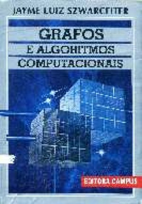

Horário: 3as e 5as, das 10h às 12h.
Início: 12 de abril de 2022.
Provas:
- P1: a combinar
- P2: a combinar
- PF: a combinar
ATENÇÃO! Professor com sinusite+pneumonia. Não teremos aula nos dias 17/05 e 19/05.
Repositório do código criado em sala de aula:
https://github.com/vigusmao/AlgGraf_2022_1
Ementa aproximada:
- Representação computacional de grafos;
- Buscas em grafos: geral, largura, profundidade;
- Aplicações de buscas: componentes conexos e biconexos, caminho mínimo em grafos sem pesos;
- Backtracking: busca em um grafo implícito (se der tempo);
- Algoritmos gulosos e técnica geral para prova de corretude;
- Árvore geradora mínima;
- Programação dinâmica e memoização;
- Caminho mínimo em grafos com pesos;
- Fluxo máximo / corte mínimo;
Bibliografia sugerida
| Grafos e Algoritmos Computacionais | Introduction to Algorithms | ||
| (Jayme Luiz Szwarcfiter) | (Cormen, Leiserson, Rivest & Stein) | ||
|  |  |
Conteúdo das aulas
12/04
Introdução ao curso. Apresentação da ementa. Revisão rápida dos principais conceitos em Teoria dos Grafos.
14/04
Representação de grafos (direcionados e não-direcionados) no computador: listas de vértices e arestas, matriz de adjacências, listas de adjacências, matriz de incidências, hashing.
Complexidades das operações básicas.
26/04
Comparação tabular detalhada das principais operações segundo cada uma das possíveis representações de grafos no computador.
Problemas propostos (para pensar em casa):
(1) O Problema da Celebridade: dado um grafo simples, direcionado, com n vértices representando pessoas numa festa, e m arestas (x,y) indicando que a pessoa x conhece a pessoa y, determinar se há alguma celebridade na festa. Uma celebridade é definida como alguém que não conhece ninguém na festa e que é conhecida por todas as pessoas da festa.
(2) O Problema das Metrópoles: dado um grafo simples, não-direcionado, com n vértices representando cidades, cada qual com seu número de habitantes fornecido, e m arestas representando estradas entre cidades, determinar quantas estradas existem conectando duas metrópoles quaisquer. Uma metrópole é definida como uma cidade com mais do que um milhão de habitantes.
28/04
Discussão dos problemas da Celebridade e das Metrópoles. Comparando soluções e suas complexidades.
Implementação em Java da representação de grafos via hashing (cada vértice aponta para um HashSet com seus vizinhos).
03/05
Buscas (percursos sistemáticos) em grafos. Busca Geral. Busca em Largura. Busca em Profundidade.
Implementando Busca em Largura usando uma fila.
Aplicação de Busca em Largura: encontrando o caminho mais curto entre dois vértices num grafo onde as arestas tem pesos unitários.
05/05
Implementando Busca em Profundidade de forma recursiva (sem uma pilha explícita).
Aplicação de Busca em Profundidade: localizando as articulações de um grafo.